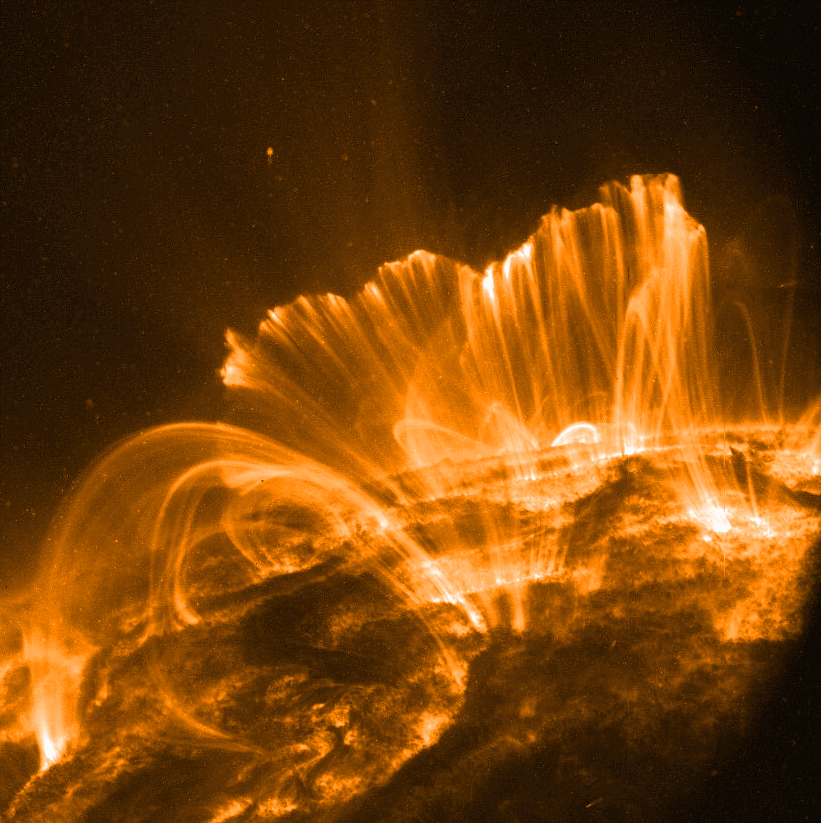

The other way in which magnetic field complicates things is by producing active regions that are probable to produce prominences, flares, CMEs etc.
An active region by definition is a region of complex magnetic field and is produced as a result of the twisting of magnetic field due to the solar differential rotation as well the convection currents and other dynamics in the Sun's interior.
When an active region matures we find within it darker regions of more intense magnetic field that are the Sunspots.
Near to these active regions one can often find cool dark ribbons called filaments (when observed on disc) and prominences (when observed against the limb).
Such prominence are prone to eruption at some point in their lifetime resulting at times in a CME or sometimes in a solar flare.
CMEs involve mass being ejected into the space surrounding the Sun whereas flares are intense violet release of energy as radiation.
Figure:
Post-eruptive loops in the wake of a solar flare, image taken by the TRACE satellite (photo by NASA)
|

|